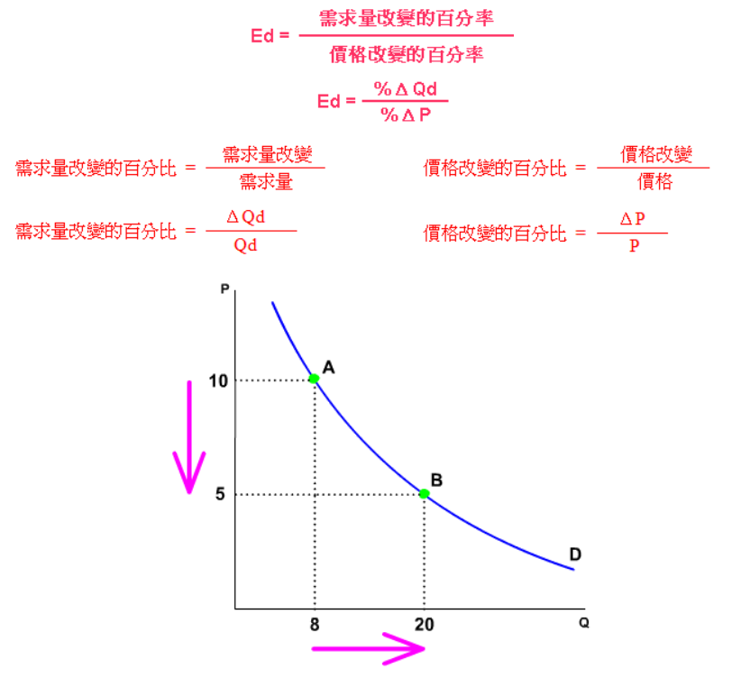
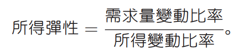
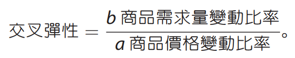

陳杰龍的筆記網站
陳杰龍的筆記網站 主頁
主頁 歸檔
歸檔 分類
分類 其他
其他 關於我
關於我 4.彈性
4.彈性
筆記說明
此筆記用途在於國立屏東大學資訊管理系大三上經濟學重點整理
並非所有人都適用
如果有侵犯到版權的問題在聯繫我，再聯絡我，我在移除
並非所有人都適用
如果有侵犯到版權的問題在聯繫我，再聯絡我，我在移除
需求的價格彈性
- 價格彈性：衡量價格變動，對該產品需求量影響程度，(曲度陡，反應小)
-
弧彈性的理念，是指由A點至B點之間的平均彈性，由A點至B點所以稱為「弧」。
由於是平均理念，所以有人想到，在以任點為基點的時候，取兩點之間為基點，亦即是兩點的平均值。
即是﹕(8+20)/2 = 14
需求量的改變百分比 = 12/14 = 85.7%
使用相同概念計算價格改變的百分比﹕價格由10＝＞5，改變了5。
基點﹕ (5+10)/2 = 7.5
價格改變的百分比 = 5/7.5 = 66.7%
價格彈性 = 85.7%/66.7% = 1.28 > 1 (高彈性) - 彈性值越大，代表需求量對價格變動的反應程度越大
- 彈性＝０：完全無彈性(糖尿病患者的胰島素)
- 彈性＝１：單位彈性
- 彈性＝♾️：完全有彈性(水，電的價格是一定的，需求量可隨著用戶增多)
- 需求彈性的決定因素
- 替代品的近似程度
- 花在該商品的所得比率
- 價格變動之後的時間長短
- 總收益與彈性
- 需求有彈性，價格下跌1%，銷售量增加超過1%，總收益增加
- 需求單位彈性，價格下跌1%，銷售量增加1%，總收益不變
- 需求無彈性，價格下跌1%，銷售量增加小於1%，總收益減少
- 你的支出與你的彈性
- 需求有彈性，價格下跌1%，購買量增加超過1%，支出增加
- 需求單位彈性，價格下跌1%，購買量增加1%，支出不變
- 需求無彈性，價格下跌1%，購買量增加小於1%，支出減少

更多的需求彈性
- 需求的所得彈性：所得變動對商品或服務的反應程度
- 正常財，所得彈性>0
- 劣等財，所得彈性<0
- 所得中性物，所得彈性=0
- 低所得國家, 奢侈品 (如高級香水與化妝品) 之所得彈性低; 但所得水 準上升之後, 所得彈性會提高
- 需求的交叉彈性：衡量當一項商品其替代品或互補品的價格變動時，該商品的需求反應
- 替代品, 交叉彈性>0
- 互補品, 交叉彈性<0
- 獨立財, 交叉彈性=0
供給彈性
- 供給彈性：一項商品價格變動，供給量的反應
- 供給彈性的決定因素
- 廠商增加供給量的難易程度
- 價格變動之後的時間長短